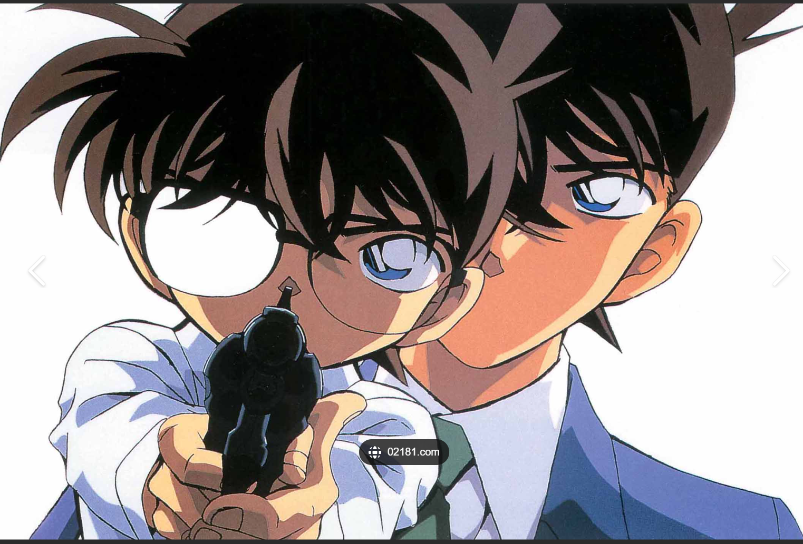
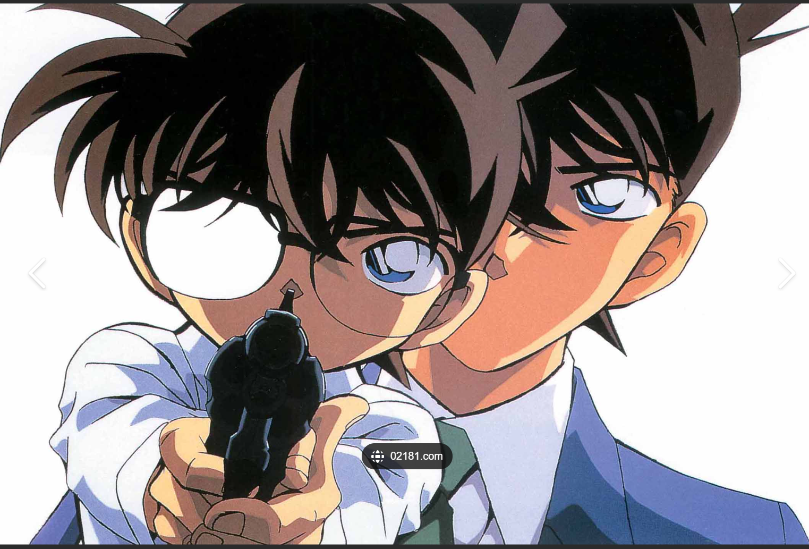

阅读
我热爱阅读各类书籍，从经典文学到现代科幻，每一本书都是一个全新的世界。
十日终焉
旅行
旅行让我领略不同的风土人情，探索未知的美景，每一次旅程都是一次难忘的经历。
这是高考完去青岛爬崂山时拍的照片，好看✌
柯南
在有空的时候，会去看一看柯南，聆听智慧的声音哈哈哈
 柯南我热爱阅读各类书籍，从经典文学到现代科幻，每一本书都是一个全新的世界。
旅行让我领略不同的风土人情，探索未知的美景，每一次旅程都是一次难忘的经历。
这是高考完去青岛爬崂山时拍的照片，好看✌
在有空的时候，会去看一看柯南，聆听智慧的声音哈哈哈
 柯南